L8/LF/L3/L5 [Engine WM] ➭ ENGINE ➭ MECHANICAL ➭ VALVE CLEARANCE ADJUSTMENT
id011000503600
1. Remove the engine front cover lower blind plug.
|
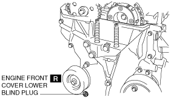 beleue00000039 |
2. Remove the engine front cover upper blind plug.
|
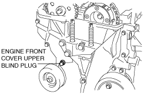 belbze00000204 |
3. Remove the cylinder block lower blind plug, and install the SST.
Cylinder block lower blind plug hole diameter: M8
|
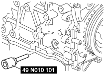 belbze00000201 |
Cylinder block lower blind plug hole diameter: M10
|
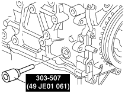 ampjjw00002884 |
4. Rotate the crankshaft in the direction of the engine rotation so that the No.1 piston is at TDC of the compression stroke. (Until the counterweight contacts SST and stops.)
5. Loosen the timing chain using the following procedure:
(1) Insert a suitable bolt (M6 X 1.0, length 25—35 mm {0.99—1.3 in}) into the engine front cover upper blind plug and tighten it until it contacts the chain tensioner arm, and then rotate it back one turn. (Set the bolt slightly away from the chain tensioner arm so that it does not contact it.)+-----------------------------------------------------------+ | 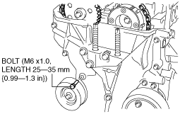 beleue00000041 | +-----------------------------------------------------------+
(2) Using the cast hexagon on the exhaust camshaft, apply force counterclockwise to facilitate unlocking the chain tensioner ratchet.+-----------------------------------------------------------+
|  am8rrw00002539 |
+-----------------------------------------------------------+
am8rrw00002539 |
+-----------------------------------------------------------+
(3) Using a Hex bit socket (2.5 mm {0.098 in}) or T15 Torx bit socket, unlock the chain tensioner ratchet so that it can be lifted up.+-----------------------------------------------------------+ | 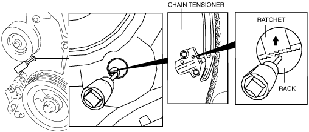 belbze00000198 | +-----------------------------------------------------------+
(4) Using the cast hexagon on the exhaust camshaft, apply force in the direction of the engine rotation to increase tension on the chain.+-----------------------------------------------------------+
|  am8rrw00002541 |
+-----------------------------------------------------------+
am8rrw00002541 |
+-----------------------------------------------------------+
Note• The chain tensioner rack is compressed using the chain tension generated by applying force to the exhaust camshaft in the direction of the engine rotation.
|
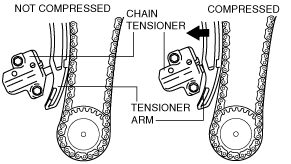 beleue00000042 |
Note• The ratchet has not been unlocked if the bolt cannot be pressed in approx. 5 mm {0.2 in}.
(5) Screw in the bolt set in Step 1 approx. 5 mm {0.2 in} and secure the tensioner arm with the rack compressed.+-----------------------------------------------------------+ | 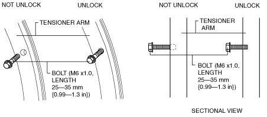 aprjjw00003610 | +-----------------------------------------------------------+
• If the tensioner arm cannot be secured, return the bolt to its original position and repeat the procedure from Step 3.
6. Fix the exhaust camshaft using a wrench on the cast hexagon, and loosen the camshaft sprocket bolt.
|
|
 am3zzw00002423
am3zzw000024237. Remove the exhaust camshaft sprocket bolt, exhaust camshaft sprocket, and washer (The washers may not be installed.) as a single unit.
Caution• Perform the work carefully so that the washer does not drop out. (The washers may not be installed.)
Note• The washers do not have to be installed on the LF-VE (ATX) and LF-DE (ATX) vehicles other than MX-5 (there is no problem with installing them).
• Be careful not to install a washer on only the IN or EX side.
|
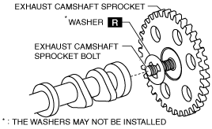 belbze00000210 |
8. Remove the oil control valve (OCV). (With variable valve timing mechanism.)
Note• The camshaft caps are to be kept ordered for correct reassembly in their original positions. Do not mix the caps.
9. Loosen the camshaft cap bolts in two or three steps in the order shown in the figure and remove the camshaft cap.
|
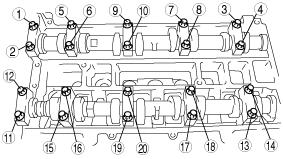 am8rrw00000586 |
10. Remove the camshafts for the intake and exhaust sides.
11. Remove the tappet.
12. Install an appropriate tappet based on the results of the valve clearance inspection.
Selected tappet = Removed tappet thickness + Measured valve clearance - Standard valve clearance
Standard valve clearance [Engine cold]
IN: 0.22—0.28 mm {0.009—0.011 in}
EX: 0.27—0.33 mm {0.011—0.012 in}
Caution• Do not use a removed tappet on another vehicle.
• If a tappet is reused, measure the thickness of the tappet and select the tappet in which the valve clearance is within the specification.
|
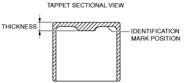 acmzzw00000071 |
Tappet specification
|
Identification mark |
Thickness (mm {in}) |
Tolerance (mm {in}) |
|---|---|---|
|
000 |
3.000 {0.1181} |
±0.0125 {0.000492} |
|
025 |
3.025 {0.1191} |
±0.0125 {0.000492} |
|
050 |
3.050 {0.1201} |
±0.0125 {0.000492} |
|
075 |
3.075 {0.1211} |
±0.0125 {0.000492} |
|
100 |
3.100 {0.1220} |
±0.0125 {0.000492} |
|
122 |
3.122 {0.1229} |
±0.0100 {0.000394} |
|
142 |
3.142 {0.1237} |
±0.0100 {0.000394} |
|
162 |
3.162 {0.1245} |
±0.0100 {0.000394} |
|
182 |
3.182 {0.1253} |
±0.0100 {0.000394} |
|
202 |
3.202 {0.1261} |
±0.0100 {0.000394} |
|
222 |
3.222 {0.1269} |
±0.0100 {0.000394} |
|
242 |
3.242 {0.1276} |
±0.0100 {0.000394} |
|
262 |
3.262 {0.1284} |
±0.0100 {0.000394} |
|
282 |
3.282 {0.1292} |
±0.0100 {0.000394} |
|
302 |
3.302 {0.130} |
±0.0100 {0.000394} |
|
322 |
3.322 {0.1308} |
±0.0100 {0.000394} |
|
342 |
3.342 {0.1316} |
±0.0100 {0.000394} |
|
362 |
3.362 {0.1324} |
±0.0100 {0.000394} |
|
382 |
3.382 {0.1331} |
±0.0100 {0.000394} |
|
402 |
3.402 {0.1339} |
±0.0100 {0.000394} |
|
422 |
3.422 {0.1347} |
±0.0100 {0.000394} |
|
442 |
3.442 {0.1355} |
±0.0100 {0.000394} |
|
462 |
3.462 {0.1363} |
±0.0100 {0.000394} |
|
482 |
3.482 {0.1371} |
±0.0100 {0.000394} |
|
502 |
3.502 {0.1379} |
±0.0100 {0.000394} |
|
522 |
3.522 {0.1387} |
±0.0100 {0.000394} |
|
542 |
3.542 {0.1394} |
±0.0100 {0.000394} |
|
562 |
3.562 {0.1402} |
±0.0100 {0.000394} |
|
582 |
3.582 {0.1410} |
±0.0100 {0.000394} |
|
602 |
3.602 {0.1418} |
±0.0100 {0.000394} |
|
625 |
3.625 {0.1427} |
±0.0125 {0.000492} |
|
650 |
3.650 {0.1437} |
±0.0125 {0.000492} |
|
675 |
3.675 {0.1447} |
±0.0125 {0.000492} |
|
700 |
3.700 {0.1457} |
±0.0125 {0.000492} |
|
725 |
3.725 {0.1467} |
±0.0125 {0.000492} |
13. Verify that No.1 cylinder is at TDC of the compression stroke. (Position counterweight contacts SST.)
14. Apply the gear oil (SAE No.90 or equivalent) to each journal of the cylinder head as shown in the figure.
|
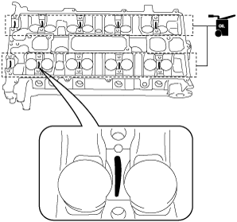 am6zzw00002188 |
15. Install the camshaft with No.1 cylinder aligned with the TDC position.
16. Apply the gear oil (SAE No.90 or equivalent) to each journal of the camshaft as shown in the figure.
|
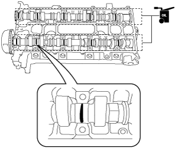 am6zzw00002281 |
17. Temporarily tighten the camshaft cap bolts evenly in 2—3 steps.
18. Tighten the camshaft cap bolts in the order shown in the following two steps.
|
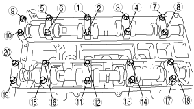 am8rrw00000587 |
Tightening procedure
1. 5.0—9.0 N·m {51.0—91.7 kgf·cm, 44.3—79.5 in·lbf}
2. 14.0—17.0 N·m {1.43—1.73 kgf·m, 10.4—12.5 ft·lbf
19. Install the OCV. (With variable valve timing mechanism.)
Tightening torque
8.0—11.5 N·m {81.5—117.2 kgf·cm, 70.8—101.7 in·lbf}
20. Install the exhaust camshaft sprocket bolt, exhaust camshaft sprocket, and a new washer (Except LF-VE (ATX) and LF-DE (ATX) vehicles other than MX-5.) as a single unit.
Caution• Install a washer to the fourth or fifth thread of the exhaust camshaft sprocket bolt being careful not to drop the washer. (Except LF-VE (ATX) and LF-DE (ATX) vehicles other than MX-5.)
• Do not tighten the camshaft sprocket bolt at this stage. Verify the valve timing before performing the bolt tightening.
Note• The washers do not have to be installed on the LF-VE (ATX) and LF-DE (ATX) vehicles other than MX-5 (there is no problem with installing them).
• Be careful not to install a washer on only the IN or EX side.
― If the washers are not installed, do not install the washers to both the IN and EX sides.
― f the washers are to be installed, install them on both the IN and EX sides.
|
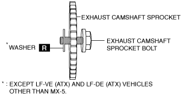 belbze00000213 |
21. Install the SST on the camshaft as shown in the figure.
Europe
|
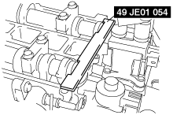 belbze00000134 |
Except Europe
|
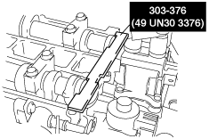 belbze00000135 |
|
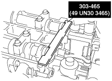 belbze00000172 |
22. Remove the installation bolt for the engine front cover upper blind plug (M6 X 1.0 length 25—35mm {1.0—1.3 in}), and apply tension to the timing chain.
23. Rotate the crankshaft clockwise and verify that the No.1 cylinder is at TDC of the compression stroke. (The position counter weight contacts the SST.)
24. Fix the exhaust camshaft using a wrench on the cast hexagon, and tighten the sprocket bolt.
|
|
 am8rrw00002546
am8rrw00002546Tightening torque
|
Bolt type |
N·m {kgf·m, ft·lbf} |
|---|---|
|
Washer based bolt |
With variable valve timing mechanism : 69—75 {7.1—7.6, 50.9—55.3} Without variable valve timing mechanism : 89—95 {9.1—9.6, 65.7—70.0} |
|
Bolt and washer assembly |
69—75 {7.1—7.6, 50.9—55.3} |
|
Bolt with dent on head |
69—75 {7.1—7.6, 50.9—55.3} |
25. Remove the SST from the camshaft.
26. Remove the SST installed in the cylinder block lower blind plug hole.
27. Rotate the crankshaft clockwise two turns and inspect the valve timing.
• If not aligned, loosen the camshaft sprocket bolt and repeat the procedure from Step 21.
28. Apply the silicone sealant and install the engine front cover upper blind plug.
|
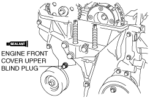 belbze00000205 |
Tightening torque
8.0—11.5 N·m {81.5—117.2 kgf·cm, 70.8—101.7 in·lbf}
29. Install the cylinder block lower blind plug.
|
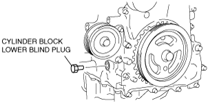 am6zzw00000888 |
Tightening torque
18—22 N·m {1.9—2.2 kgf·m, 13.3—16.2 ft·lbf}
30. Install a new engine front cover lower blind plug.
|
beleue00000039 |
Tightening torque
10—14 N·m {102—142 kgf·cm, 88.6—123.9 in·lbf}